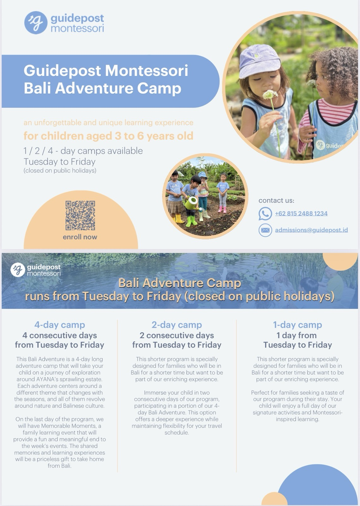
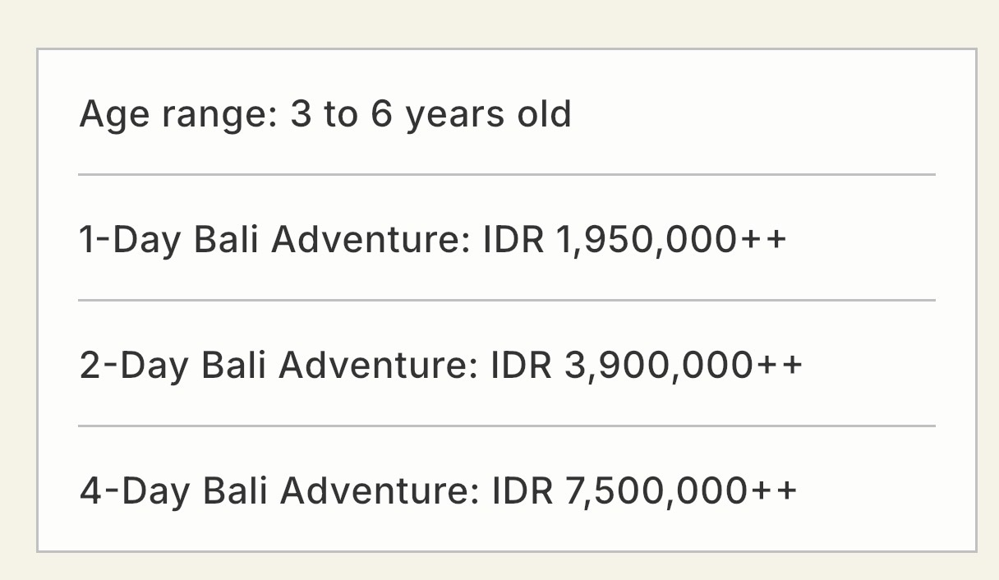
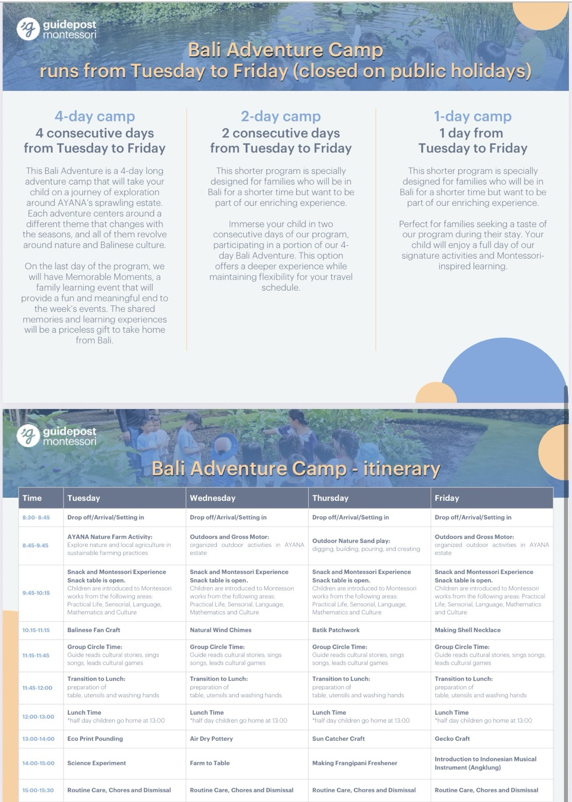
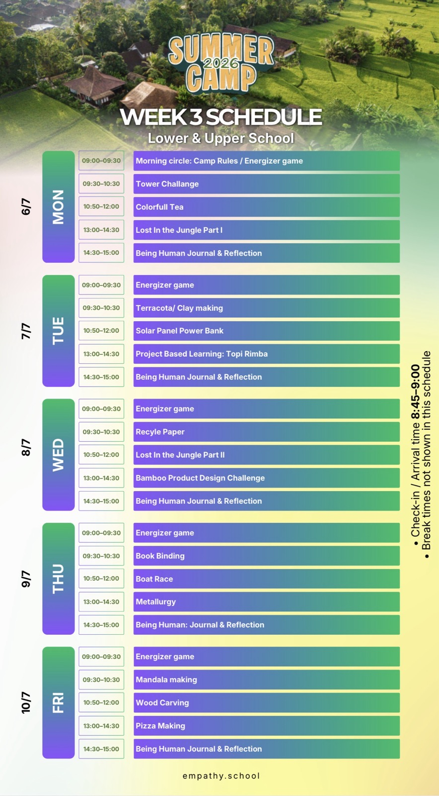
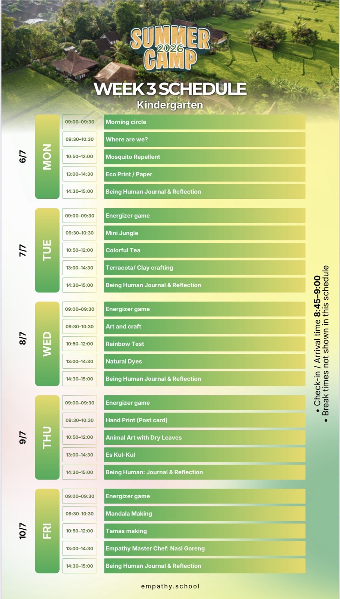
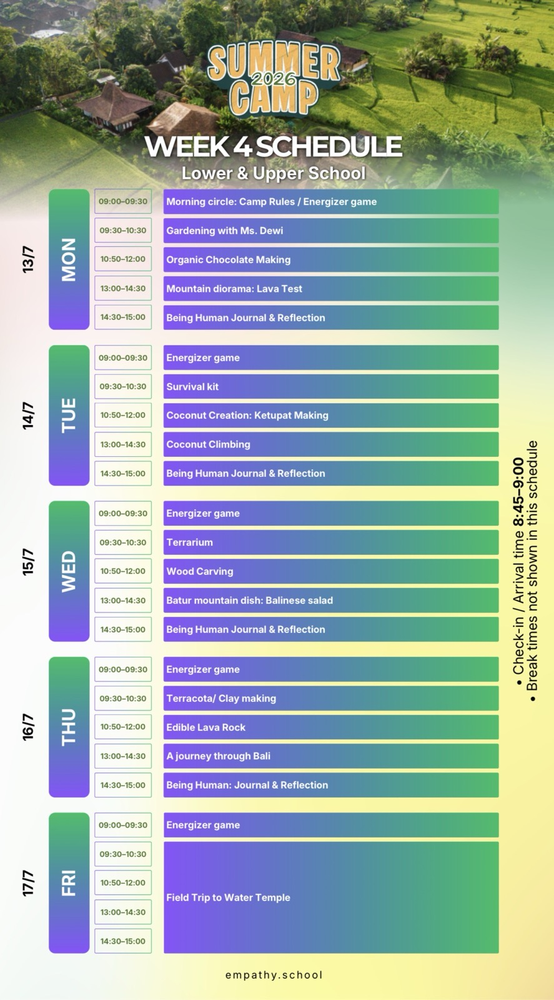
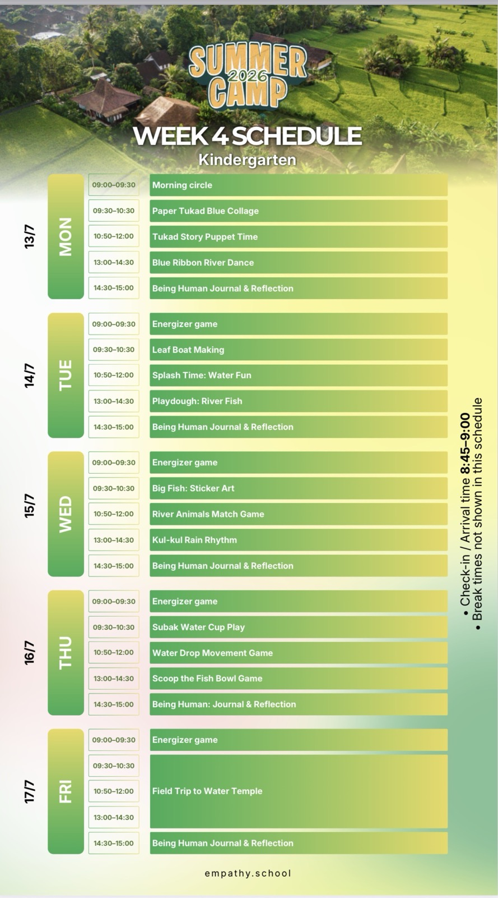

兩場精心策劃的夏令營體驗：在峇里島 AYANA 莊園展開 Montessori 自然冒險，或在 Empathy School 透過主題式課程探索世界、釋放創意。
專為 3 至 6 歲 孩子設計，在峇里島 AYANA 廣闊莊園中，結合自然探索與蒙特梭利學習的獨特冒險體驗。
週二至週五開放
（國定假日休息）
3 至 6 歲幼兒
蒙特梭利啟發式學習
峇里島 AYANA 莊園
自然與文化交融的環境
週二至週五任選一天，讓孩子體驗招牌活動與蒙特梭利啟發學習，適合短暫停留的家庭。
連續兩天參與部分四日營活動，在維持旅遊行程彈性的同時，獲得更深入的體驗。
週二至週五完整探索 AYANA 莊園，最後一天更有「難忘時刻」家庭學習活動，為這週畫下完美句點。


++ 表示需另加稅金與服務費。台幣為約略換算（2026/6/22 匯率，1 TWD ≈ 563 IDR），實際金額以付款當下為準。更多詳情請聯繫招生團隊。

2026 年 7 月舉辦的兩週主題式夏令營，分為 Lower & Upper School 與 Kindergarten 兩個班群，讓孩子在探索中學習、在遊戲中成長。
小學與高年級班
課程設計更富挑戰性，包含專案式學習、科學實驗、戶外冒險與文化體驗，培養獨立思考與團隊合作能力。
幼兒園班
透過感官遊戲、自然素材創作、音樂律動與故事時間，讓幼兒在充滿關懷的環境中快樂學習。
主題涵蓋叢林探索、自然材質、色彩與工藝。


主題圍繞河流、火山、水神廟與峇里島文化。


報到 / 抵校
主題活動與課程
放學 / 離校
* 課表中的休息時間未個別列出。請以 empathy.school 官方公告為準。
快速比較兩個夏令營，找到最適合孩子的選擇
| 項目 | Guidepost Bali Adventure | Empathy School Summer Camp |
|---|---|---|
| 適合年齡 | 3 — 6 歲 | Kindergarten / Lower & Upper School |
| 舉辦時間 | 週二至週五（國定假日休息） | 2026 / 7 / 6 — 10 與 7 / 13 — 17 |
| 天數選擇 | 1 / 2 / 4 天 | 按週報名（5 天） |
| 核心特色 | 蒙特梭利 + AYANA 自然農場 + 峇里文化 | 主題式專案、STEAM、戶外冒險、文化探索 |
| 代表活動 | 農場體驗、蠟染、陶藝、安格隆音樂 | 高塔挑戰、水神廟校外教學、披薩製作、木雕 |
| 費用參考 | IDR 1,950,000++ 起（約 NT$3,460） | 請洽 empathy.school |